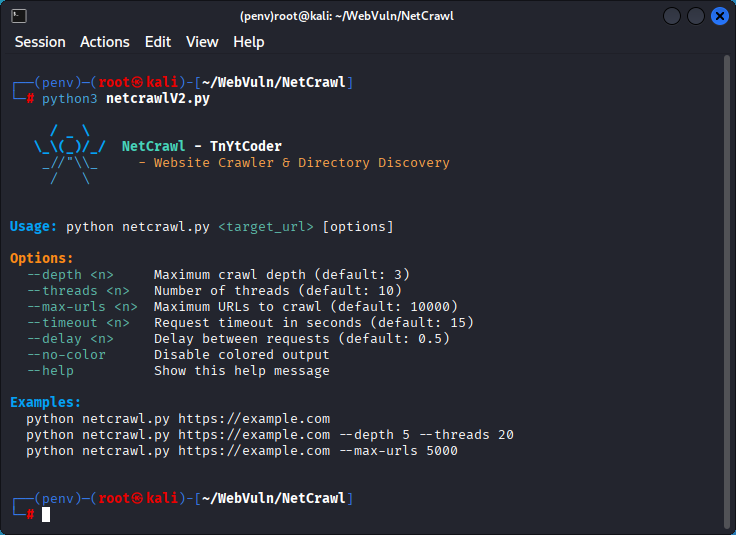
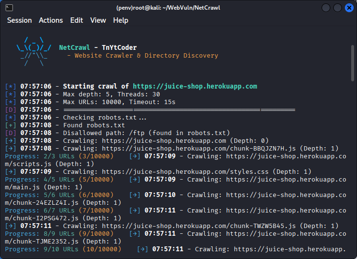
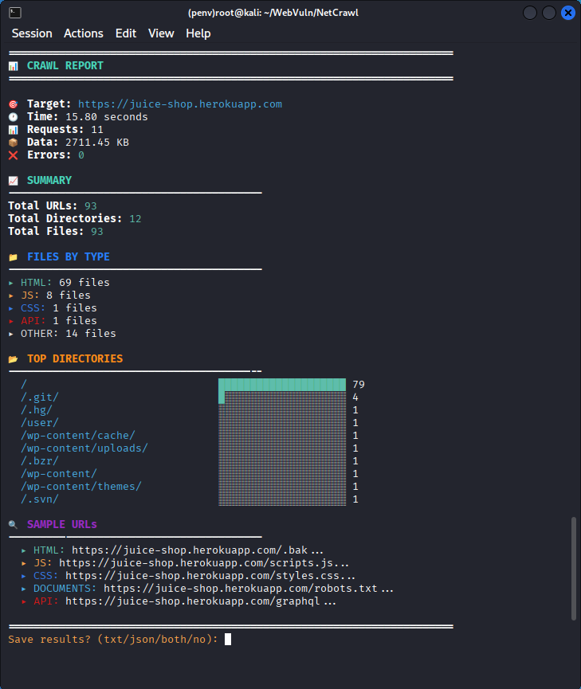
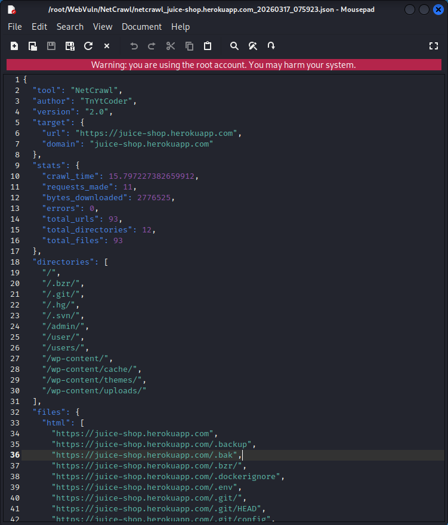

/ _ \
\_\\(_)/_/ NetCrawl
_//"\\_ TnYtCoder
/ \
Fast • Stealthy • Professional
Multi-threaded architecture crawls hundreds of URLs per minute. Configurable thread count for optimal performance.
Color-coded logs with real-time progress bars. Easy to read, easy to debug.
Rate limiting, user-agent rotation, and robots.txt compliance. Won't get you blocked.
Finds hidden directories, admin panels, backup files, and API endpoints automatically.
TXT format for humans, JSON format for automation. Complete statistics and categorization.
Parses robots.txt and sitemap.xml to discover even more URLs.




# Clone the repository
git clone https://github.com/TnYtCoder/NetCrawl.git
cd NetCrawl
# Install dependencies
pip install requests beautifulsoup4 colorama
# Verify installation
python netcrawl.py --helppython netcrawl.py <target_url> [options]# Basic crawl
python netcrawl.py https://example.com
# Deep crawl
python netcrawl.py https://example.com --depth 5 --threads 20
# Fast scan
python netcrawl.py https://example.com --threads 30 --delay 0.1
# Limited crawl
python netcrawl.py https://example.com --max-urls 500| Option | Description | Default | Example |
|---|---|---|---|
--depth N |
Maximum crawl depth | 3 | --depth 5 |
--threads N |
Concurrent threads | 10 | --threads 20 |
--max-urls N |
URL limit | 10000 | --max-urls 5000 |
--timeout N |
Request timeout (seconds) | 15 | --timeout 10 |
--delay N |
Delay between requests | 0.5 | --delay 0.1 |
--no-color |
Disable colored output | False | --no-color |
$ python netcrawl.py https://wordpress-site.com
[→] 10:30:15 - Crawling: https://wordpress-site.com (Depth: 0)
[+] 10:30:16 - Found: https://wordpress-site.com/wp-admin (Status: 302)
[+] 10:30:16 - Found: https://wordpress-site.com/wp-content/ (Status: 403)
[+] 10:30:17 - Found: https://wordpress-site.com/wp-json/ (Status: 200)
[+] 10:30:18 - Found: https://wordpress-site.com/xmlrpc.php (Status: 405)
[+] 10:30:19 - Found in robots.txt: /wp-admin/
[+] 10:30:20 - Found in sitemap: https://wordpress-site.com/about
Progress: 47/234 URLs ████░░░░░░░░░░$ python netcrawl.py https://api.example.com --depth 2 --delay 0.3
[→] 10:31:20 - Crawling: https://api.example.com (Depth: 0)
[+] 10:31:21 - Found: https://api.example.com/v1/users (Status: 401)
[+] 10:31:21 - Found: https://api.example.com/v1/products (Status: 200)
[+] 10:31:22 - Found: https://api.example.com/v2/auth (Status: 404)
[+] 10:31:22 - Found: https://api.example.com/docs (Status: 200)
[+] 10:31:23 - Found: https://api.example.com/graphql (Status: 400)
[+] 10:31:24 - Found: https://api.example.com/swagger (Status: 200)
Progress: 23/89 URLs ██░░░░░░░░░░░░$ python netcrawl.py https://testsite.com --depth 4 --threads 15
[→] 10:32:10 - Crawling: https://testsite.com (Depth: 0)
[✓] 10:32:11 - Found: https://testsite.com/.env (Status: 403)
[✓] 10:32:11 - Found: https://testsite.com/backup.zip (Status: 200)
[✓] 10:32:12 - Found: https://testsite.com/admin (Status: 200)
[✓] 10:32:12 - Found: https://testsite.com/phpinfo.php (Status: 200)
[✓] 10:32:13 - Found: https://testsite.com/.git/config (Status: 404)
⚠️ Sensitive files detected! Review with caution.======================================================================
📊 CRAWL REPORT
======================================================================
🎯 Target: https://example.com
🕐 Duration: 45.23 seconds
📊 Requests: 1,245
📦 Data: 12.4 MB
❌ Errors: 3
📈 SUMMARY
----------------------------------------
Total URLs: 1,042
Total Directories: 156
Total Files: 886
📁 FILES BY TYPE
----------------------------------------
▸ HTML: 342 files
▸ JavaScript: 89 files
▸ CSS: 45 files
▸ Images: 234 files
▸ Documents: 12 files
▸ API Endpoints: 78 files
▸ Other: 86 files
📂 TOP DIRECTORIES
----------------------------------------
/ ████████████████░░░░ 342
/assets/ ████████░░░░░░░░░░░░ 156
/api/ ██████░░░░░░░░░░░░░░ 134
/images/ █████░░░░░░░░░░░░░░░ 98
/admin/ ████░░░░░░░░░░░░░░░░ 67
/backup/ ██░░░░░░░░░░░░░░░░░░ 23class NetCrawl:
"""
Main crawler class for website discovery.
Args:
target_url (str): Website to crawl
max_depth (int): Maximum recursion depth (default: 3)
max_threads (int): Concurrent threads (default: 10)
max_urls (int): URL limit (default: 10000)
timeout (int): Request timeout (default: 15)
delay (float): Delay between requests (default: 0.5)
"""start_crawl()Begins the crawling process. Handles robots.txt, sitemaps, and recursive crawling.
generate_report()Displays final statistics and discovered resources in the console.
save_results()Prompts user for format (TXT/JSON) and exports results to file.
_process_url(url, depth)Internal method that processes individual URLs and extracts links.
Human-readable format with full URL listing and categorization.
netcrawl_example.com_20240317_143022.txtMachine-parsable format for integration with other tools.
{
"tool": "NetCrawl",
"author": "TnYtCoder",
"target": "https://example.com",
"urls": [...]
}| Threads | Speed | Use Case |
|---|---|---|
| 5-10 | Conservative | Production sites, rate-limited |
| 15-25 | Aggressive | Testing, development |
| 30+ | Extreme | Local/authorized only |
| Delay | Risk Level | Use Case |
|---|---|---|
| 0.1s | High | Local testing |
| 0.3-0.5s | Medium | General crawling |
| 1.0s+ | Low | Stealth mode |
pip install -r requirements.txt--threads 20 --delay 0.2--timeout 30--max-urls 2000--no-color--max-urlsThis tool performs ACTIVE crawling on target websites. Usage is permitted ONLY on:
Unauthorized crawling may violate:
By using this software, you assume all liability for your actions. The author accepts no responsibility for misuse.